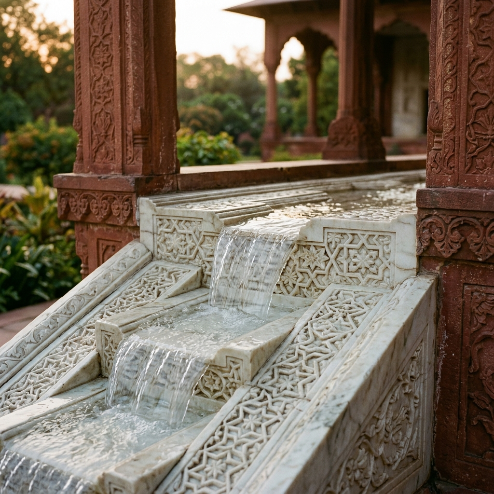

Bagh-e-Farah Baksh
"Bestower of Pleasure"The Emperor's private garden and harem enclosure — the most elevated and exclusive terrace. Square in plan, quartered by khayaban with 105 fountains.
Square · 105 FountainsWhere Water, Symmetry, and Empire Meet
Built 1641–1642 under Emperor Shah Jahan as a Persian-style Charbagh ("four-garden") — a walled representation of paradise, arranged to mirror divine order through geometry, water, and nature.
Located ~5 km northeast of Lahore's Walled City, the gardens span approximately 16 hectares, enclosed by a crenellated red sandstone wall with ornate corner chhatris.
Inspired by the older Shalimar Garden in Kashmir (built by Shah Jahan's father Jahangir), Lahore's flat terrain meant every cascade and fountain had to be engineered — including a 100+ mile canal, the Shah Nahar (Hansli Canal), drawn from the Ravi River.
A 100+ mile (Shah Nahar) gravity-fed canal from the Ravi River powers 410–414 fountains across three terraces — entirely without mechanical pumps. A secondary Persian wheel well supplemented supply during dry seasons.
From imperial commission to UNESCO endangerment — scroll through the key events.
← Drag or scroll to explore →
Each bagh descends 4–5 metres from the one above, creating a gravity cascade from south (highest) to north (lowest). The khayaban — fountain-lined walkways — quarter each terrace into the classic Charbagh form.
The Emperor's private garden and harem enclosure — the most elevated and exclusive terrace. Square in plan, quartered by khayaban with 105 fountains.
Square · 105 FountainsThe Emperor's own terrace — the most elaborate waterworks in the garden. This narrow rectangular terrace holds 152 fountains, the Great Marble Cascade, and the Sawan Bhadoon.
Rectangle · 152 FountainsThe public entrance terrace — accessible to noblemen and visitors. Square in plan, with 153 fountains. Water arrives here last, having cooled the air along its descent from the south.
Square · 153 Fountains410–414 fountains, five major cascades, zero pumps. The entire system is gravity-fed — water descends from the Shah Nahar canal through the highest terrace, over chadar cascade chutes, cooling air that once exceeded 49°C in Lahore summers.
410–414 total fountains across three terraces
Marble fountains feeding haūz pools
Major cascades incl. Great Marble Cascade
Mechanical pumps — entirely gravity-fed
Peak Lahore summer heat the system was designed to counter

The spine of the entire garden — a water channel running from the highest to lowest terrace. Every element mirrors across this line, encoding divine order in the landscape itself.
Each bagh is quartered by khayaban (fountain-lined walkways), creating four equal sub-gardens that reflect the Quranic description of paradise's four rivers.
Still marble pools double every cypress and minaret into their reflection, creating an infinite vertical axis connecting sky to earth, heaven to the garden visitor below.
Identical trees planted in mirror pairs along the khayaban reinforce the axial reading — the garden is meant to be read as one half of a whole, completed by its reflection.
The Mughal concept of bagh encodes harmonious coexistence between humans and nature — a bridge between the earthly and divine, made visible through geometry and water.
The red sandstone boundary wall with corner pavilions frames the garden as a bounded paradise — a literal "walled garden" (pairidaeza), the Persian root of the word "paradise".
"The garden is not decoration — it is cosmology written in water and stone, where bilateral symmetry makes visible the Mughal idea of divine order."
Shalimar Gardens is an unusually strong candidate for photogrammetric and NeRF-based digital preservation — by design and by necessity.
Strict axial symmetry makes photogrammetry and NeRF reconstruction easy to validate — one half should mirror the other. Deviation flags errors or degradation.
The 4–5m elevation steps between terraces provide strong depth cues for monocular depth estimation and multi-view stereo pipelines.
Two of three original hydraulic systems no longer physically exist, destroyed in 1999. 3D reconstruction is not just visualization — it is the only form of preservation left for these structures.
Water motion — cascades, fountains, reflections — is an ideal test for combining static 3D reconstruction with dynamic element simulation and novel view synthesis.
Select your group type for tailored guidance on what to look for, ask about, and when to visit.
The big question: Water flows downhill without pumps — but how does it reach all 410 fountains? The answer lies in the 100-mile canal, gravity, and centuries of Mughal engineering genius.
Design hook: How does a strict Charbagh geometry — four gardens quartered by water channels — translate into a terrace system on flat ground without natural elevation changes?
Practical guide: Shalimar is open sunrise to sunset, with a modest entry fee. The fountains run best early morning — after midday pressure often drops.